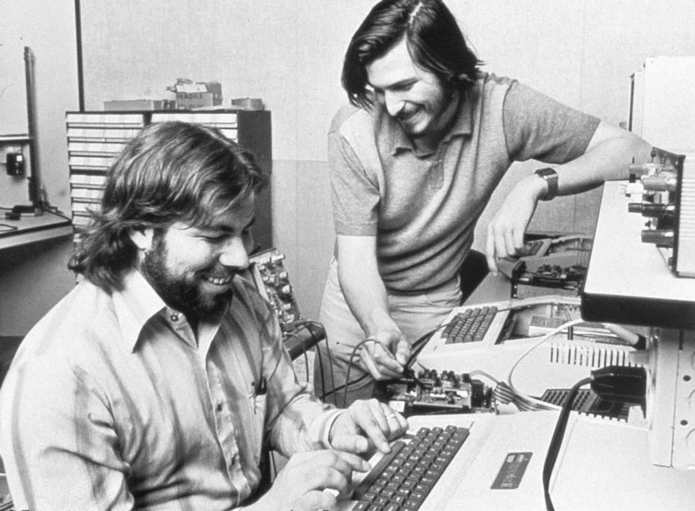

Steve Wozniak

Steve Jobs et Steve Wozniak
Stephen Wozniak, dit Steve Wozniak, né le 11 août 1950 à San José, aussi appelé Woz, est un informaticien, professeur d'informatique et électronicien américain. Il est cofondateur de la société Apple Computer avec Steve Jobs et Ronald Wayne, et concepteur des premiers Apple (dont Apple I, Apple II, Apple III, Lisa et divers périphériques), et est un des pionniers de l'industrie micro-informatique.